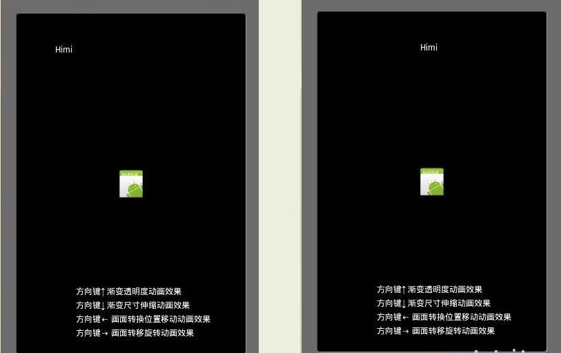

在SurfaceView中照样使用Animation(上)
之前我给大家介绍了一张13帧的png的图，利用设置可视区域的方式来实现动画效果，但是这些属于我们自己来实现动画的方式，其实Android给我们的有两类自定义动画方式:
第一类：Frame By Frame 帧动画（不推荐游戏开发中使用）
所谓帧动画，就是顺序播放事先做好的图像,类似于放电影；
分析： 此种方式类似我之前的那种利用设置可视区域的方式来实现动画效果，不仅类似而且还不如！所以此种方式在此不予分析；
第二类：Tween Animation 渐变动画
即通过对对象不断做图像变换(平移、缩放、旋转)产生动画效果！实现方式其实就是预先定义一组指令，这些指令指定了图形变换的类型、触发时间、持续时间。这些指令可以是以 XML 文件方式定义，也可以是以源代码方式定义。程序沿着时间线执行这些指令就可以实现动画 效果。
总结：那么在Android游戏开发中我们优先选用两种方式：第一种设置可视区域的方式来实现动画效果(帧动画),需要童鞋们手动实现,那么在之前我的博文【Android2D游戏开发之四】中已经有了相应的源码!大家可以去下载研究；那么这里就主要为大家详细分析 Tween Animation！
在讲述SurfaceView添加动画之前，我们先来看看在View中如何实现Tween Animation以及Tween 中的四种效果;
MyViewAnimation .java
import android.content.Context;
import android.graphics.Bitmap;
import android.graphics.BitmapFactory;
import android.graphics.Canvas;
import android.graphics.Color;
import android.graphics.Paint;
import android.view.KeyEvent;
import android.view.View;
import android.view.animation.AlphaAnimation;
import android.view.animation.Animation;
import android.view.animation.RotateAnimation;
import android.view.animation.ScaleAnimation;
import android.view.animation.TranslateAnimation;
/**
* @AlphaAnimation 渐变透明度动画效果
* @ScaleAnimation 渐变尺寸伸缩动画效果
* @TranslateAnimation 画面转换位置移动动画效果
* @RotateAnimation 画面转移旋转动画效果
*/
public class MyViewAnimation extends View {
private Paint paint;
private Bitmap bmp;
private int x = 50;
private Animation mAlphaAnimation;
private Animation mScaleAnimation;
private Animation mTranslateAnimation;
private Animation mRotateAnimation;
public MyViewAnimation(Context context) {
super(context);
paint = new Paint();
paint.setAntiAlias(true);
bmp = BitmapFactory.decodeResource(getResources(), R.drawable.icon);
this.setFocusable(true);// 只有当该View获得焦点时才会调用onKeyDown方法
}
@Override
protected void onDraw(Canvas canvas) {
super.onDraw(canvas);
canvas.drawColor(Color.BLACK);
paint.setColor(Color.WHITE);
canvas.drawText("Himi", x, 50, paint);// 备注1
canvas.drawText("方向键↑ 渐变透明度动画效果", 80, this.getHeight() - 80, paint);
canvas.drawText("方向键↓ 渐变尺寸伸缩动画效果", 80, this.getHeight() - 60, paint);
canvas.drawText("方向键← 画面转换位置移动动画效果", 80, this.getHeight() - 40, paint);
canvas.drawText("方向键→ 画面转移旋转动画效果", 80, this.getHeight() - 20, paint);
canvas.drawBitmap(bmp, this.getWidth() / 2 - bmp.getWidth() / 2,
this.getHeight() / 2 - bmp.getHeight() / 2, paint);
x += 1;
}
public boolean onKeyDown(int keyCode, KeyEvent event) {
if (keyCode == KeyEvent.KEYCODE_DPAD_UP) {// 渐变透明度动画效果
mAlphaAnimation = new AlphaAnimation(0.1f, 1.0f);
// 第一个参数fromAlpha 为动画开始时候透明度
// 第二个参数toAlpha 为动画结束时候透明度
// 注意：取值范围[0-1];[完全透明-完全不透明]
mAlphaAnimation.setDuration(3000);
// //设置时间持续时间为3000 毫秒=3秒
this.startAnimation(mAlphaAnimation);
} else if (keyCode == KeyEvent.KEYCODE_DPAD_DOWN) {// 渐变尺寸伸缩动画效果
mScaleAnimation = new ScaleAnimation(0.0f, 1.5f, 0.0f, 1.5f,
Animation.RELATIVE_TO_PARENT, 0.5f,
Animation.RELATIVE_TO_PARENT, 0.0f);
// 第一个参数fromX为动画起始时X坐标上的伸缩尺寸
// 第二个参数toX为动画结束时X坐标上的伸缩尺寸
// 第三个参数fromY为动画起始时Y坐标上的伸缩尺寸
// 第四个参数toY 为动画结束时Y 坐标上的伸缩尺寸
// 注意：
// 0.0表示收缩到没有
// 1.0表示正常无伸缩
// 值小于1.0表示收缩
// 值大于1.0表示放大
// -----我这里1-4参数表明是起始图像大小不变，动画终止的时候图像被放大1.5倍
// 第五个参数pivotXType 为动画在X 轴相对于物件位置类型
// 第六个参数pivotXValue 为动画相对于物件的X 坐标的开始位置
// 第七个参数pivotXType 为动画在Y 轴相对于物件位置类型
// 第八个参数pivotYValue 为动画相对于物件的Y 坐标的开始位置
// 提示：位置类型有三种,每种效果大家自己尝试哈~这里偷下懒~
// 毕竟亲眼看到效果的区别才记忆深刻~
// Animation.ABSOLUTE
// 、Animation.RELATIVE_TO_SELF、Animation.RELATIVE_TO_PARENT
mScaleAnimation.setDuration(2000);
this.startAnimation(mScaleAnimation);
} else if (keyCode == KeyEvent.KEYCODE_DPAD_LEFT) {// 画面转换位置移动动画效果
mTranslateAnimation = new TranslateAnimation(0, 100, 0, 100);
// 第一个参数fromXDelta为动画起始时X坐标上的移动位置
// 第二个参数toXDelta为动画结束时X坐标上的移动位置
// 第三个参数fromYDelta为动画起始时Y坐标上的移动位置
// 第四个参数toYDelta 为动画结束时Y 坐标上的移动位置
mTranslateAnimation.setDuration(2000);
this.startAnimation(mTranslateAnimation);
} else if (keyCode == KeyEvent.KEYCODE_DPAD_RIGHT) {// 画面转移旋转动画效果
mRotateAnimation = new RotateAnimation(0.0f, 360.0f,
Animation.RELATIVE_TO_SELF, 0.5f,
Animation.RELATIVE_TO_SELF, 0.5f);
// 第一个参数fromDegrees为动画起始时的旋转角度
// 第二个参数toDegrees 为动画旋转到的角度
// 第三个参数pivotXType 为动画在X 轴相对于物件位置类型
// 第四个参数pivotXValue 为动画相对于物件的X 坐标的开始位置
// 第五个参数pivotXType 为动画在Y 轴相对于物件位置类型
// 第六个参数pivotYValue 为动画相对于物件的Y 坐标的开始位置
mRotateAnimation.setDuration(3000);
this.startAnimation(mRotateAnimation);
}
return super.onKeyDown(keyCode, event);
}
}
OK,对于Tween Animation下的每种动画效果的实例化的每个参数都解释的很详细了！其实动画的实现不光用代码可以实现，在xml中注册实现也是可以的，这里就不多写了，大家可以自己去尝试写一下，那么在view中我们播放一种特效动画，只要实例化其对象，然后设置下参数，然后startAnimation()就好了，步骤很简单，只是每个动画实例化的参数确有着千变万化的改法，这些我也没法子一一来给大家演示，大家可以自己改改参数看看实际的效果！当然对于每种动画我们不光有设置播放的时候，还有一些属性和方法可以调用，比如Animation.restart()重放动画，getTransformation()此方法返回假，说明动画完成等等很多属性。
顺便先解释下MyViewAnimation.java 类中onDraw()方法里的（备注1）!其实这里我是想跟大家说明下Android Animation实现机制。
【启动任意一种动画效果之前 和 之后 的对比图】

很明显、"Himi"字样在动画开始前和开始后出现了移动，而且在MyViewAnimation.java中我没有使用Runnable接口，也没有调用刷新的函数，那么我来给各位童鞋解释下原因：动画的每种变换其实内部都是一次矩阵运算。在Android中，Canvas类中包含当前矩阵，当调用Canvas.drawBitmap (bmp, x, y, Paint) 绘制时，android 会先把 bmp 做一次矩阵运算，然后将运算的结果显示在 Canvas 上，然后不断修改 Canvas 的矩阵并刷新屏幕，View里的对象就会不停的做图形变换，动画就形成了。还有一点提醒大家：动画的播放是对整个游戏画布进行的操作，这一点要知道哟~那么下面就要给大家介绍如何在我们的SurfaceView中运用Tween Animation!（由于字数限制，请看中文和下文）